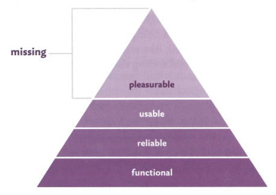

<!-- @include _header -->
<!-- $title Chapter 2: Literature Review -->

<div class="row">
	<div class="w12">
		<header class="section">
			<h1><!-- $title --></h1>
		</header>

		<section class="section" id="content-strategy">
			<h2>2.1 Content strategy</h2>
			<p>Information in the form of text, images and video powers the whole dynamic of the web and now, with many businesses almost entirely reliant on their online presence to be successful it's more important than ever for marketing personnel to stay on top of the content they're providing to their customers. Dealing with improving content across a large site is a big job and presents all sorts of problems, mainly centred around confusing, out-of-date and just plain useless content remaining online for longer than is appropriate simply because it gets lost or forgotten. When sites get redesigned content rarely gets proper consideration because of how resource and budget intensive good content is to create or because of technical problems migrating from the old site (Bailie, R., 2010, p. 19-22).</p>
			<p>Content strategy is a relatively new field in the web industry which aims to solve these problems. Closely linked to UX design and development, it's a broad term which covers the processes and systems that create, distribute and analyse content (Halvorson, K., 2010, p. 23-25).</p>

			<h3>The importance of content for clients</h3>
			<p>While the purposes of different websites vary massively the majority of commercial properties have a few business goals in common. They either aim to persuade you to carry out an action (e.g. buying a book on Amazon, sharing a cat video on YouTube) or provide you with information about a product, topic or service.</p>
			<p>The content provided by a website is the vehicle that links these business goals with the user and clients are now beginning to consider the quality, organisation and relevance of their content over the design and visual style of the site.</p>
			<p>The simple fact is that websites with great content attract more visitors and whether that results in more sales, happier customers or a video going viral it's generally a good thing. The flip side is that bad content drives people away. Halvorson and Rach (2012, p. 15) note that <q>when content sucks &mdash; when it's overwritten, redundant, hard-to-find, irrelevant &mdash; people come, look, and leave. And sometimes they never come back</q>.</p>
			
			<h3>Content auditing</h3>
			<p>The majority of projects now being approached by web agencies are re-designs of existing sites rather than entirely new ventures, the sub-field of content auditing aims to analyse the content on the old site for the purposes of either informing the design and development of a new site or the updating of content on the existing one.</p>
			<p>Kissane (2011 p. 52) notes that we need to need to discover and assess what content already exists before even thinking about how to structure or design a replacement site. On smaller sites this is relatively easy to do, it's a process of simply clicking through the navigation and looking at the structure of the content. On larger sites with hundreds of pages this is a much more difficult objective. Older sites have often grown far beyond their original designers and developers intended and there are lots of pages buried deep within different sub-sections.</p>
			<p>The process of collecting standard information (e.g. title, URL, metadata, H1) about all the existing pages on a website is often called a quantitative audit or content inventory. Carrying out a quantitative audit is important because it allows an agency to assess the content and structure of a current site so they can see the areas which most need improvement and attention during the design of the new site. It's also one of the quickest and easiest ways to find out about the site content as it can be automated (Halvorson, K. and Rach M., 2012, p. 15).</p>
			<p>Many content strategists use a qualitative approach to assess websites, providing a deeper look at the quality and usefulness of the content to particular user groups. This approach is much more informal and often aims to make a judgement on whether larger areas and of the site are performing as required rather than analysing specific pages.</p>
			<p>Halvorson and Rach (2012, p. 53) note that quantitative audits are helpful but only up to a certain point. The main problem is that the process only gives you the most basic information about the pages rather than more in-depth opinion and assessment of content quality, relevance and usefulness. While this makes the process somewhat less useful than a qualitative audit it also makes it a lot easier to do automatically using the same technologies that search engines use to 'spider' web pages.</p>
			<p>Neither method is better than the other, the key is to use both approaches together; quantitative to get a broad overview of the content and qualitative to increase the depth of the data (Jones, C., 2011, p. 170). The ideal content strategy tool would combine elements of both to allow web agencies to audit websites quickly while still adding and reviewing content quality and relevance.</p>

			<h3>Mobile</h3>
			<p>The ever increasing proportion of web traffic that comes from mobile devices has had a big effect on client's interest in reviewing and optimising the content on large, bloated corporate sites.</p>
			<p>In truth there's no such thing as content strategy specifically for mobile, in our increasingly multi-screen world content now has to be adaptable for every situation whether that's a mobile phone or a 50" TV. The challenges for businesses trying to are vast and solutions to the organisation and scalability issues are still being considered. McGrane (Mcgrane, K., 2012, p. 54-57) makes a case for reusable content which can adapted for use on different platforms, for instance by using headlines of an adapted length on mobile where space is more at a premium.</p>
			<p>The endless array of different devices types and content needs showcase a need for content optimisation and above all, making it much easier for visitors to find what they're looking for. The solutions may lie in creating more robust systems for categorising and ordering existing content.</p>

			<h3>Assessing content quality, relevance and usefulness</h3>
			<p>When assessing the quality of content many content strategists simply write notes about the site rather than putting their thoughts in any kind of order. This means that the information contained in a qualitative audit can be difficult to understand and digest particularly if handed directly to clients.</p>
			<p>If any output from a content audit is to be given directly to a client without any significant pre-processing it needs to be in a more coherent order. Kadec (2013, p. 142) suggests three broad categories into which all 'bad content' can be categorised:</p>
			<ul>
				<li>Redundant: Page that is no longer necessary or is duplicated elsewhere</li>
				<li>Out-of-date: Pages that should be on the site but need updating to continue being relevant</li>
				<li>Trivial: Pages that don't contain any useful or relevant information</li>
			</ul>
			<p>Sorting 'bad content' into these categories makes it much easier to create graphs and charts which show the content status breakdown in a more visual way. In addition to this categorisation it's always important to give a space for specific notes. Data is incredibly useful but it shouldn't ever be a substitute for intelligent thought (Jones, C., 2011, p. 157).</p>
		</section>

		<section class="section" id="visual-design">
			<h2>2.2 Visual design</h2>
			<p>A crucial aspect of any application (whether it's built for the web or not) is it's look and feel. This visual side of the design process can change the feel of the product in a lot of different ways and it's important to tailor the experience to fit in more closely with what the target market wants and expects from the product. The design and technology market that my application is targeted at is very design literate, meaning that the appearance of the application is even more important as it will likely be used as a differentiator between products competing to perform the same function (Kadavy, D., 2011, p. 25).</p>
			<p>When the visual design is this crucial choosing an appropriate style becomes almost as important to the product's success as usability because the user experience relies so heavily upon it. In the case of a content auditing application the focus is on making a previously difficult process much simpler and quicker so it makes sense to examine design styles which are clean and streamlined (Kadavy, D., 2011, p. 25 <span class="cite"></span>).</p>

			<h4>Flat design</h4>
			<p>A recent trend in the visual design of web applications is 'flat design', a style which deliberately avoids the shadows, highlights and gradients of previous movements in an attempt to create designs that appear simple, clean and honest.</p>
			<figure class="pull-right">
				
				<figcaption>Figure 2-1: Apple's Find My Friends application for iPad (<div class="cite"></div>).</figcaption>
			</figure>
			<p>Flat design can be seen as a reaction to the overly skeuomorphic designs that have previously dominated the market particularly in Apple's software. Skeuomorphism is an obscure word which defines the way that designs sometimes inherit textures or layout from past versions, normally physical objects that performed the same function prior to computers (Greif, S., 2012). An example of this can be found in Apple's iOS Notes application which features a yellow lined background, borrowing from the physical item it replaces. This 'faux-realism' has become a dividing topic in the design world because of it's overuse as can be seen in Figure 2-1, Apple's Find My Friends application. This application has no physical object to be compared against yet is covered in leather-style textures (Gruber, J., 2013).</p>
			<p>Flat design has become more prevalent in recent months, led in part by Microsoft's Metro design language which shuns any kind of skeuomorphism by using only flat tiles for interface. Whether Microsoft genuinely believes that a flat style is more usable or if they simple wanted to mark some differentiation with Apple is yet to be discovered but their implementation of the style caused a shift in the design community (Greif, S., 2012).</p>
			<p>The style also naturally lends itself towards simple, usable applications as it focuses much more closely on the tasks that the user wants to perform rather than the visual styling of the system.</p>

			<h3>Emotional design</h3>
			<p>The interface of any application is the object that stands between the user and the task that they need to complete. It's not only the needs of the user that should be considered when designing an application - it's the wants too, the emotional connection that users make with the products they love to use.</p>
			<figure class="pull-right">
				
				<figcaption>Figure 2-2: Remapping Maslow's Hierarchy of Needs (<div class="cite"></div>).</figcaption>
			</figure>
			<p>Maslow's hierarchy of needs describes the basic needs that every person has to have based on the idea that lower-level needs must be served before higher-level ones (Lidwell, W., Holden, K., &amp; Butler, J., 2010, p. 124). This same theory can be applied to user interface design by remapping the pyramid with aspects relevant to a web application as seen in figure 2-2 (Walter, A., 2011, p. 5-6). An application needs to function in order to be any use at all. After that it needs to be reliable then usable but the key to making a deeper emotional connection lies at the top of the pyramid; making the application pleasurable to use.</p>
			<p>It's difficult to imagine what level of emotional design should be applied to and application and that's mainly because it needs to be at an appropriate level for the application type.</p>

			<h3>Websites vs. web applications</h3>
			<p>Although web applications are built using many of the same technologies as websites they are fundamentally different in some key ways and this affects the process that is taken to design, develop and launch them.</p>
			<p>Zamboni (2012, p. 123) shows the differences very succinctly by directly comparing the users goals and concerns when they are using a website as opposed to a web app:</p>
			<figure>
				<table>
					<thead>
						<tr>
							<th></th>
							<th>Website</th>
							<th>Web app</th>
						</tr>
					</thead>
					<tbody>
						<tr>
							<th>User goal</th>
							<td>Find information</td>
							<td>Complete a task</td>
						</tr>
						<tr>
							<th>User journey</th>
							<td>Haphazard</td>
							<td>Linear</td>
						</tr>
						<tr>
							<th>User interface</th>
							<td>Content and menus</td>
							<td>Forms</td>
						</tr>
						<tr>
							<th>Primary concern</th>
							<td>Information space</td>
							<td>Application flows</td>
						</tr>
						<tr>
							<th>Digital technique</th>
							<td>Information architecture</td>
							<td>Interaction design</td>
						</tr>
					</tbody>
				</table>
				<figcaption>Table 2-1: The differences between websites and web applications (<span class="cite"></span>).</figcaption>
			</figure>
			
			<p>For this reason common information architecture techniques like sitemaps and card sorting are unnecessary as they are concerned with organising information rather than leading the user through a process. To replace them techniques like task flows become more important as they detail the process a user will follow as well as forming the basis for prototypes and user testing (Hoekman, R., 2007, p.43-44).</p>
		</section>

		<section class="section" id="wireframing-prototyping-and-iterative-design">
			<h2>2.3 Wireframing, prototyping and iterative design</h2>
			<p>Iterative design is a methodology that centres on a core cycle of design, testing and analysis which aims to create better user interfaces though early interaction with the target users (Lidwell, W., Holden, K., &amp; Butler, J., 2010, p. 142). The idea of constant iteration can also be extended to the development of an application by showing target users progress in the application as it happens rather than only getting feedback at the end of the project (Lidwell, W., Holden, K., &amp; Butler, J., 2010, p. 78). This is often called agile development.</p>
			<p>When developing a web application the iterative process suggests that the user should always always at the centre of thinking so that their needs form the core of the product rather than being based on a requirements document or feature list.</p>
			
			<h3>Wireframing</h3>
			<p>Wireframing is a key stage to developing websites and web applications which involves taking ideas and thoughts from earlier planning stages and expressing them on paper for the first time. Effective wireframes show the structure and layout of the page without adding superfluous details like colour or design style (Kadavy, D., 2011, p. 33). This method of showing only the basics of each page makes them ideal for exploring and iterating different user flows, layouts and ideas.</p>
			<p>Wireframes can take many different forms and their complexity varies greatly depending on the project. The most common way of creating wireframes is using a simple marker and paper although software packages like <a href="http://www.omnigroup.com/products/omnigraffle/">OmniGraffle</a> and <a href="http://www.balsamiq.com/products/mockups">Balsamiq</a> exist specifically to create higher fidelity drawings that can be shown to clients in a more formal way. Wireframes can also be created using front-end development techniques with the added advantage of potentially being able to use the code later on in the project.</p>

			<h3>Prototyping</h3>
			<p>Prototyping is a quick and inexpensive process of testing potential layouts, designs and wireframes with real users as part of an iterative design process (Zambonini, D., 2012, p. 177).</p>
			<p>Warfel (2009, p. 4) notes that the key thing about prototypes is that they go a lot further that requirements documents by letting potential users experience and design and provide real-time feedback to a designer or developer. Web-based prototypes excel at this by placing the application design or layout within it's real environment is a great way to gage real reactions. If created especially carefully web prototypes can also be used as a basis for production code using a framework like Twitter Bootstrap.</p>
			<p>Aside from the web-based option there are lots of ways of prototyping, each suited to a particular use case or stage of development. Paper prototypes are a great way of integrating the user's opinion in the design cycle at a very early stage as they are by far the quickest and cheapest to create. While basic, this low-tech approach can be particularly effective in the design stages of a project when combined with wireframing. Clicks can be simulated by switching between different sheets which means that some basic user testing is still possible.</p>
			<p>One practical method of helping iterative design to work in an increasingly technical context is to show design ideas as image click-throughs. This allows user testing to take place long before the product is at the stage when it functions correctly. There are lots of different tools that can be used to creating them including PowerPoint and Keynote thanks to their link features (Warfel, T., 2009, p. 84).</p>
		</section>

		<section class="section" id="usability">
			<h2>2.4 Usability</h2>
			<p>As user interfaces have become ever more complex there has been a greater need for a more considered approach to the design of this crucial barrier between the user and the task they want to perform. Usability comprises of the rules and guidelines surrounding the design of interfaces.</p>
			
			<h3>Identifying the target audience</h3>
			<p>It's key when creating any sort of human-computer interface to understand the people who are going to be using it.</p>

			<h3>Establishing user needs</h3>
			<p>At this stage there's a clear vision of what the application is trying to accomplish but it's necessary to establish whether the concept matches up with what real users need from a content auditing tool.</p>
			<p>One easy way of finding out what users want from a product is through a short survey sent to people identified as part of the target audience. While this technique can generate mountains of quantitative data for analysis it can also give the researcher a skewed view of the audience as it includes no additional information other that that which is requested.</p>
			<p>Surveys can be a useful tool but the biggest insights in answering this question can be found by simply talking to potential users through a focus group. Listening to people in a focus group allows you to not only hear what they say but how they say it, their body language and their reaction to other people's opinions (Quesenbery, W. &amp; Brooks, K., 2010, p. 35).</p>
			<p>Prior to attempting a focus group the aims and questions must be considered carefully to avoid the conversation from getting too far off course. For this project the key questions to ask within a focus group relate to the web strategist's thoughts about content strategy and their attitudes towards web applications. It's also helpful to find out more about the users existing behaviour, in this case the current processes surrounding the creation of a content audit (Spencer, D., 2010, p. 54).</p>

			<p>Identifying these needs early on in the project is especially helpful in deciding which features are essential to the application ans which are simple nice to have.</p>

			<h3>Usability</h3>
			<p>Much academic work about usability focuses on how to design interfaces that user instantly knows how to use, without being primed on the subject or interface.</p>
			<p>Jakob Nielsen’s 10 Usability Heuristics <span class="cite"></span>, so called because they define a set of guidelines rather than being specific rules.</p>
			<ol>
				<li>Visibility of system status</li>
				<li>Match between system and the real world</li>
				<li>User control and freedom</li>
				<li>Consistency and standards</li>
				<li>Error prevention</li>
				<li>Recognition rather than recall</li>
				<li>Flexibility and efficiency of use</li>
				<li>Aesthetic and minimalist design</li>
				<li>Help users recognize, diagnose, and recover from errors</li>
				<li>Help and documentation</li>
			</ol>
			<p>These guidelines define a few key <span class="more"></span></p>

			<p>No matter how closely a user interface sticks to guidelines there's no substitute for testing with potential users.</p>
		</section>

		<section class="section" id="conclusions">
			<h2>2.5 Conclusions</h2>
			<p>The main audience for the application would be web design agencies like Ten4 Design who need a solution for completing content audits more quickly, and hence cheaply, than they can using multiple tools and manual techniques.</p>
			<p>The agency would purchase the system and set up user accounts and projects so that team members can run inventories and put together content reports for clients.</p>
			<p>In general the level of technical competency amongst professionals in the content, web and UX/UI strategy fields is high. However, this makes it even more crucial that the application is fast, easy to use and robust enough to stand up to technical scrutiny.</p>
			<p>To meet these requirements I will use Ruby-on-Rails because of its web application background</p>
		</section>

		<a class="next-part" href="<!-- @path research.html -->">Chapter 3: Primary Research</a>
	</div>
</div>

<!-- @include _footer -->